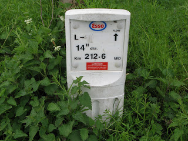

I know we have enough on our hands with mapping what we can see: but what about what’s under our feet (or wheels)?

On my travels around the West Midlands countryside I regularly come across pipeline markers like the one illustrated. Depending on my route I can often join up the markers to trace the corresponding underground pipeline. The oil pipelines carry a lot of information as you can see which is why they get photographed.
They are a lot less common than the gas pipeline markers which are a boring white pipe about 2.5m high with a fluorescent orange top. These carry a lot less information just usually who you can ring in an emergency. Some have serial numbers but by no means all. Where one can be seen in the distance but can’t be reached because there are no rights of way to it , the fluorescent marker allows a compass bearing to be taken and a distance estimated for later editing against Bing imagery.
Some pipeline markers have bright fluorescent roofs on them making them look like an arrow pointing skywards. They are numbered and are apparently designed for locating by aerial imagery, although I’ve yet to be able to discern one at Bing’s resolution.
The West Midlands has several oil pipelines crossing it, with at least 4 large oil terminals: BHX Airport; Kingsbury; Fort Dunlop; and Bedworth in our region so we get to see a lot of pipeline markers.
Linewatch runs an excellent website with information to help in preventing builders and civil engineers digging up and damaging pipelines. The page here has a great collection of pictures of what the different companies’ markers look like. In urban locations they can be much more unobtrusive and consist of brass plaques mounted in the pavements. I’ve hunted for them around the Fort Dunlop terminal but without success so far. It might make a good treasure-hunt type of mapping party! My wife just thinks I’m nuts when I get excited about coming across one of these markers on our walks representing as it does, another piece of the jigsaw puzzle. She is good enough to point out ones that I’ve missed though!
There’s also a good schematic map of where the pipelines go. Very detailed locations, which are copyrighted, can be found at a related membership site Linesearch, which is off-limits to us OSMers and is really for on-site contractors operating digging equipment.
Birmingham is also the termination point of the Elan Valley Aqueduct, a (largely) buried pipeline bringing water over 73 miles (118 km) from the Elan Valley reservoir in mid-Wales. Water travels at about 2 miles per hour along the pipeline taking about one and a half days to reach Birmingham at the Frankley reservoirs. It was built over 100 years ago, between 1893 and 1904 and is an engineering marvel, dropping only 52m over a length of 118 km – a gradient of 1:2300. The water arrives by gravity alone with no assistance needed from pumps. Whilst most of it is underground there are stretches of overground pipeline and there are aqueducts bridged over rivers and the odd brick-built valve house. It was mapped with the aid of out-of-copyright Ordnance Survey maps.
Interestingly there is a large network of state-run pipelines known as GPSS (Government Pipeline and Storage System) largely for supplying military installations and is a hangover from World War II and Operation PLUTO (Pipeline Under the Ocean) prepared for supplying the D-Day landings.
As none of this gets rendered, why should anyone get excited about unseen, underground pipelines. Well, firstly there’s the intellectual satisfaction of working out what all the surface paraphernalia relates to and also of linking it altogether in a network. Secondly there’s a sense of completeness in mapping how energy, water and other industrial requirements traverse the planet. Thirdly if we’re given a tag which shows up in the editors (well it does in JOSM – I haven’t checked in Potlatch) then I suppose we’re duty-bound to use it!
Do other mappers in parts of the world, where land is not at such a premium as it is in the crowded islands of the UK and pipelines can constructed above ground, map them? If they’re a major landmark shouldn’t they be rendered?
Perhaps the nice folks at ITOWorld will give us a rendered layer of pipelines?
Is there a way of joining the surface links of a pipeline such as reservoirs, terminals, pumping stations, venting stations, refineries, chemical works together in a relation?
Currently I indicate direction of flow with a oneway=yes tag where this can be ascertained from the above-ground marker, which results in an error message nag from the editor and lots of little arrows rendered that are attached to nothing. So if you see one of these arrows and are wondering what on earth it can be – I’ve been mapping pipelines beneath you.

.png)
 Andy
Andy{kind=link}
{kind=link}
{kind=link}